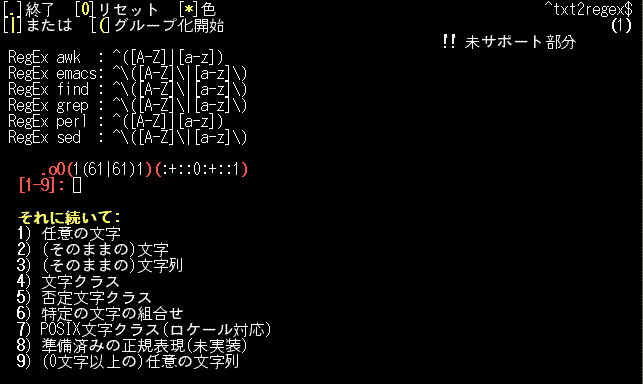

| Suporte para as classes POSIX, como [:alpha:], [:lower:] e amigos |
 |
| Suporte total a grupos, incluindo o controle de abertura/fechamento |
 |
| Use --showmeta para obter informações sobre os metacaracters dos programas |
 |
| Use --showinfo para obter informações de um programa específico |
 |
| Use --whitebg para rodar o txt2regex em um terminal de fundo branco |
 |
| Use --make para gerar expressões regulares prontas para todos (--all) os programas ou para programas específicos (--prog). |
 |
| Suporte total a Localização, veja o programa em Japonês |
 |
Screenshot completo com comentários
Tradução para o Português feita por Gustavo Roberto Rodrigues Gonçalves.
Voltar para a página principal do txt2regex